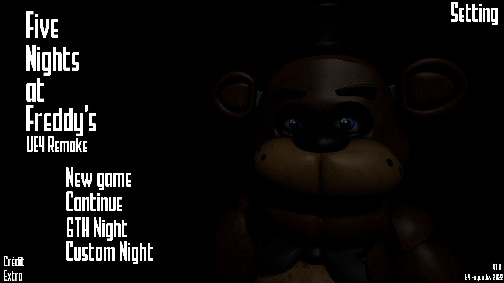
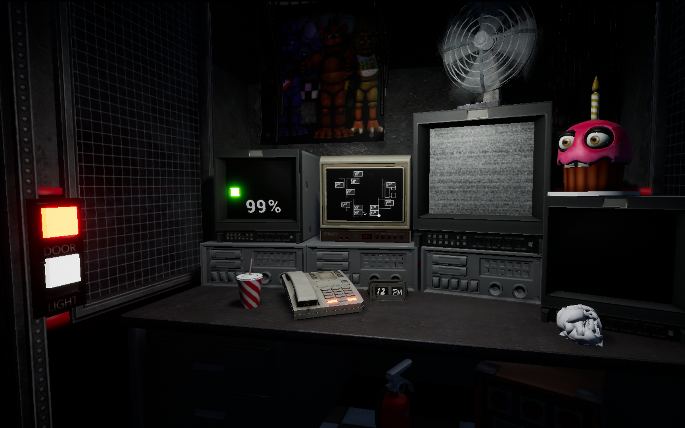
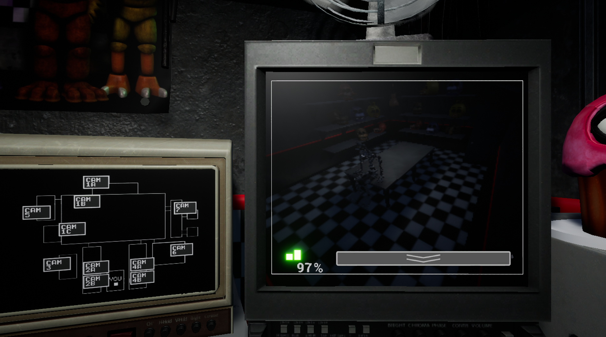
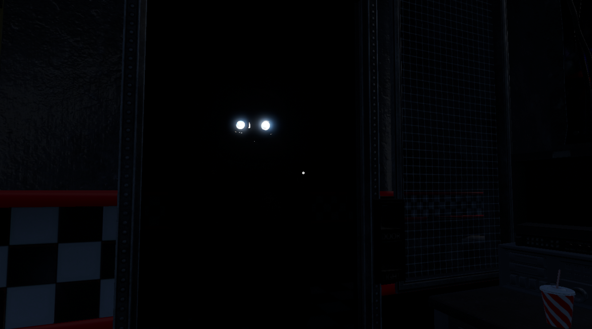
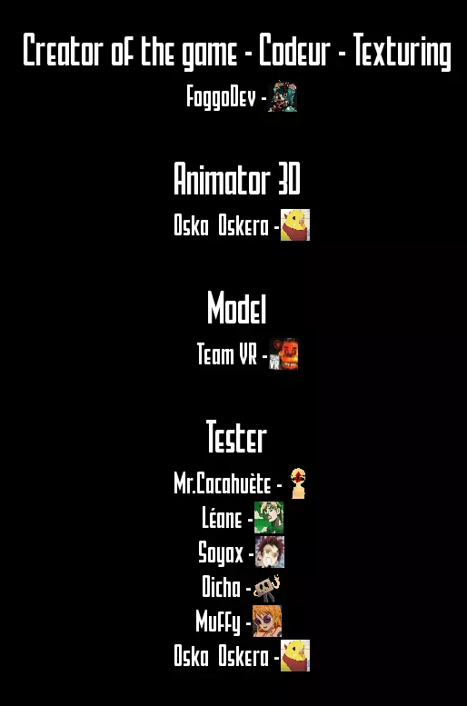

Nouveautés
Jeux
Nous Contacter
|
À propos d'alulia

Information
   Télécharger
En tant que nouvel employé, vous travaillerez comme agent de sécurité lors du quart de nuit. Votre travail consistera à surveiller de près les animatroniques et à vous assurer que tout se déroule correctement. Cependant, les choses pourraient ne pas être aussi simples qu'elles en ont l'air. Des rumeurs circulent sur des événements étranges et troublants qui se seraient produits dans le restaurant après sa fermeture. Certains prétendent que les animatroniques se comportent de manière étrange, errant dans le restaurant par eux-mêmes et apparaissant même là où ils ne devraient pas être. En tant que gardien de nuit, vous aurez accès aux caméras de sécurité du restaurant et à d'autres outils pour surveiller les animatroniques. Mais soyez averti, le travail peut être assez difficile et angoissant. Vous devrez vous assurer de garder un œil sur les animatroniques en permanence, car ils ont été connus pour se déplacer et même attaquer après la fermeture. Pour vous aider dans votre mission, vous disposerez d'une alimentation électrique limitée que vous devrez gérer judicieusement afin de vous assurer que les caméras et les autres équipements restent opérationnels toute la nuit. Si l'électricité vient à manquer, les portes de sécurité qui vous protègent seront désactivées, vous laissant vulnérable aux attaques. Alors, êtes-vous prêt à relever le défi de travailler chez Freddy Fazbear's Pizza ? Pouvez-vous survivre au quart de nuit et découvrir les secrets qui se cachent derrière les murs du restaurant ? Seul le temps le dira. Bonne chance et n'oubliez pas de garder votre sang-froid.
Autre jeux


Crédit
